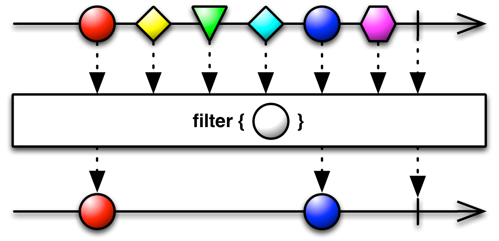

Reactive Programming
RxJava and Reactive Streams
What is Reactive?
Only a few years ago a large application had tens of servers, seconds of response time, hours of offline maintenance and gigabytes of data. Today applications are deployed on everything from mobile devices to cloud-based clusters running thousands of multi-core processors. Users expect millisecond response times and 100% uptime. Data is measured in Petabytes. Today's demands are simply not met by yesterday’s software architectures.
The Reacive Manifesto

| Responsive | React to demand |
| Resilient | React to failure |
| Elastic | React to load |
| Message Driven | React to events |
Let's talk about data
And how we get it
| Single Value | Multiple Values | |
|---|---|---|
| Synchronous | T | Iterable[T] |
| Asynchronous | Future[T] | ? |
How do we get multiple values asynchronously?
How do we compose asynchronous values?
What is the essence of iteration?
Iteration
for (String item : items) {
// do stuff
}- Get the next element
- When is the iteration complete?
- How about when an error occurs?
Observable[T]
Generates data to be observed
Creating Observables
- Observable.just(1)
- Observable.just(1,2,3)
- Observable.from(T[])
- Observable.from(Iterable[T])
- Observable.from(Future[T])
Special Observables
- Observable.empty()
- Observable.never()
- Observable.error(Exception)
- Observable.interval(Long interval, TimeUnit unit)
- Observable.range(start, end)
Custom Observables
Remember those three properties of iteration?
- Emit items
- Indicate errors
- Completion
Custom Observables
Observable.create(subscriber -> {
try {
subscriber.onNext(1);
subscriber.onNext(2);
subscriber.onNext(3);
subscriber.onComplete();
} catch (Exception e) {
subscriber.onError(e);
}
});
Transforming Observables
Just like streams
Rx's Greatest Contribution

Marble Diagrams!
filter
Filer specializations
- distinct, distinctUntilChanged
- ignoreElements
- first, last
- skip, take
- skipLast, takeLast
map

flatMap

concatMap

Combining Observables
Merge
zip/zipWith

combineLatest
Getting to the Data
subscribe()
Observable.just(1,2,3).
map(i -> i + 1).
subscribe(System.out::println);
// 2
// 3
// 4
Error Handling
- Asynchronous execution means standard try/catch does not work
- Requires asynchronous error reporting/handling
- Exceptions are still cool
subscribe(onNext, onError)
Observable.just(2, 1, 0, -1).
map(i -> 4 / i).
subscribe(
item -> System.out.println("Received: " + item),
err -> System.err.println("Error => " + err.getMessage()));
// Received: 2
// Received: 4
// Error => / by zero
Wait... there was that third thing
What about when a stream is completed?
Observable.just(3,2,1).
map(i -> i * i).
subscribe(
item -> System.out.println("Received: " + item),
err -> System.err.println("Error => " + err.getMessage()),
() -> System.err.println("Completed"));
// Received: 9
// Received: 4
// Received: 1
// Completed
We found it!
| Single Value | Multiple Values | |
|---|---|---|
| Synchronous | T | Iterable[T] |
| Asynchronous | Future[T] | Observable[T] |
Threading
Threading
- Most operations are, by default, single-threaded
- Operations must be explicitly scheduled on other threads
- Implemented with Schedulers
Schedulers
- Schedulers.computation()
- Schedulers.io()
- Schedulers.from(Executor)
- Schedulers.newThread()
- ... and more
Assigning schedulers
- subscribeOn
- observeOn
Makes threading much easier, but be careful!
Hot / Cold
Cold Observables
- Accept any number of subscribers
- Emits the same values to all subscribers
Observable<Long> longs = Observable.just(1,2,3);
longs.subscribe(System.out::println);
// 1
// 2
// 3
longs.subscribe(System.out::println);
// 1
// 2
// 3
Hot Observables
- Emit values all the time
- Each subscriber only gets the values emitted after subscription
Hot Observables
Examples
- Keyboard input
- Mouse movement
- Button clicks
- Pub/Sub events
Backpressure
Backpressure
This is all asynchronous -- what happens if producers and consumers do not process elements at the same rate?
Slow Producer/Fast Consumer
- Doesn't really matter.
Fast Producer/Slow Consumer
- Now we have a problem
- Observables are push-based
- Data "stacks up" while waiting for processing.
- Eventually fills up memory
Backpressure Solutions
Reactive Pull
Observable.create(observer -> {
observer.setProducer(requested -> {
System.out.println("Requested " + requested + " more elements");
for (int i = 0; i < requested && !subscriber.isUnsubscribed(); i++) {
// Emit next items...
}
}
});
Throttling


Reactive Streams
Reactive Streams
- When consumer operates faster than producer, push works great (such as standard Rx)
- When producer operates faster than consumer, pull works best (don't overproduce)
Now we get the best of both worlds
Reactive Streams
- Governs the interface between producers and consumers
- Defines an API, a specification and a TCK
- Version 1.0.0-RC5 released on April 10, 2015
RxJavaReactiveStreams
- Implementation of Reactive Streams for RxJava
- Allows for converting from Obervable to Publisher and vice versa
- Also allows for converting rx.Subscriber to org.reactivestreams.Subscriber
Other Implementations
- Akka Streams
- Ratpack
- Reactive Rabbit
- Reactor
- Slick
- Vert.x 3.0 (currently alpha)
Specialized Libraries
rxjava-jdbc
- Current version: 0.5.6
Database db = new Database(connectionProvider);
Observable<Integer> score = db
.select("select score from person where name <> ? order by name")
.parameter("XAVIER")
.getAs(Integer.class)
.last();
RxNetty
- Non-blocking Network I/O
RxAndroid
- Android-specific bindings
- Most examples have it replacing AsyncTask
- Also has bindings for lifecycle and lifecycle
- Probably more. I don't actually write for Android...
Observable.from("one", "two", "three", "four", "five")
.subscribeOn(Schedulers.newThread())
.observeOn(AndroidSchedulers.mainThread())
.subscribe(/* an Observer */);
Common Problems
Testing
- Testing async code is hard
- RxJava provides Observable::toBlocking()
- Works great for verifying data
List<Integer> ints = Observable.just(1,2,3).
toList().toBlocking().single();
TestSubscriber
Allows assertions to be executed against subscribers in unit tests
TestScheduler
Allows testing events by manipulating time
Debugging
Debugging
- Debugging async code is hard
- Imperative code has stack traces that make sense
- Stack traces from onError will only show a slice of execution
- Test individual steps
- Keep steps pure!
RxJavaPlugins
- Allow modification of default behavior
- See https://github.com/ReactiveX/RxJava/wiki/Plugins
Thank you
Bill Carlson